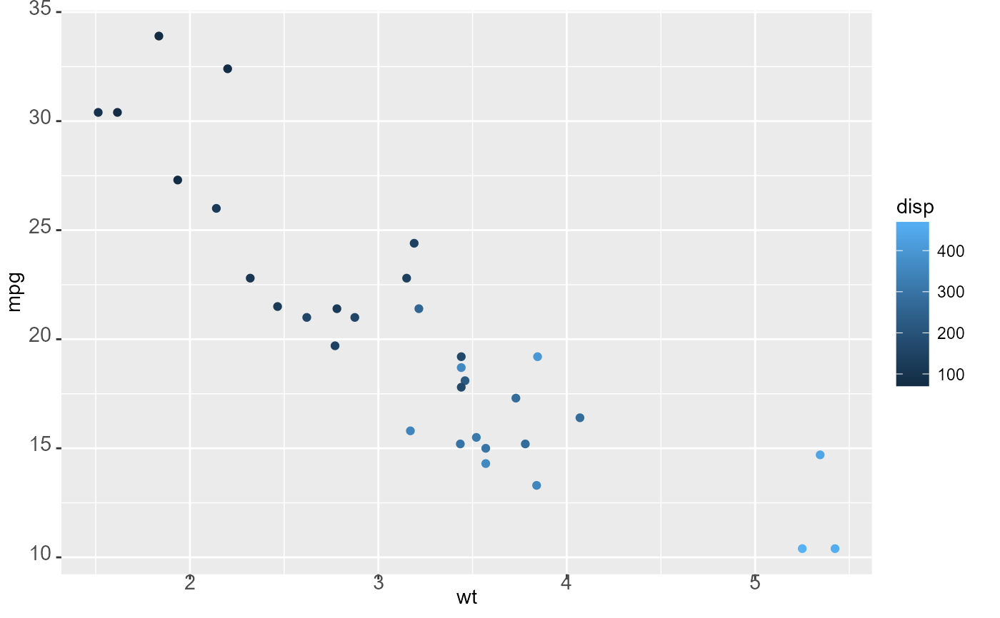
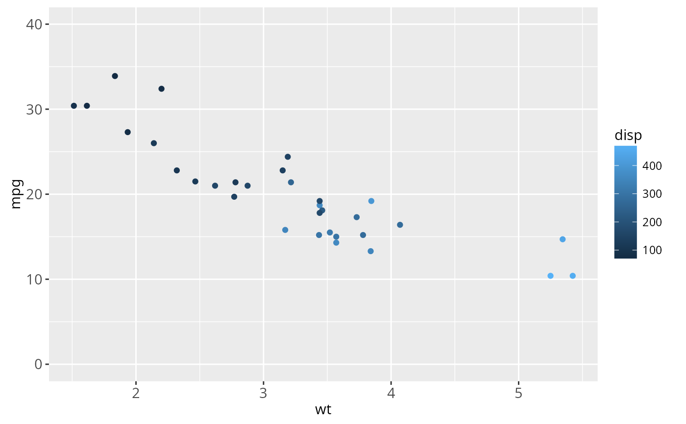
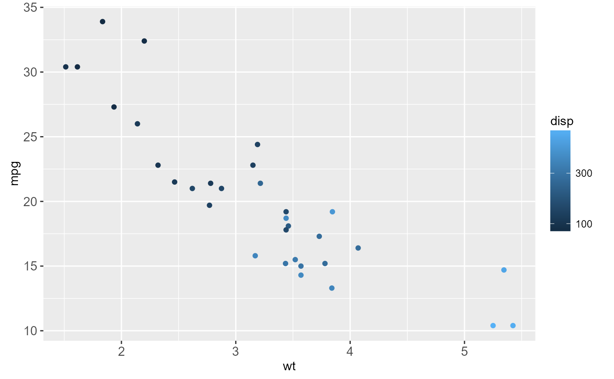
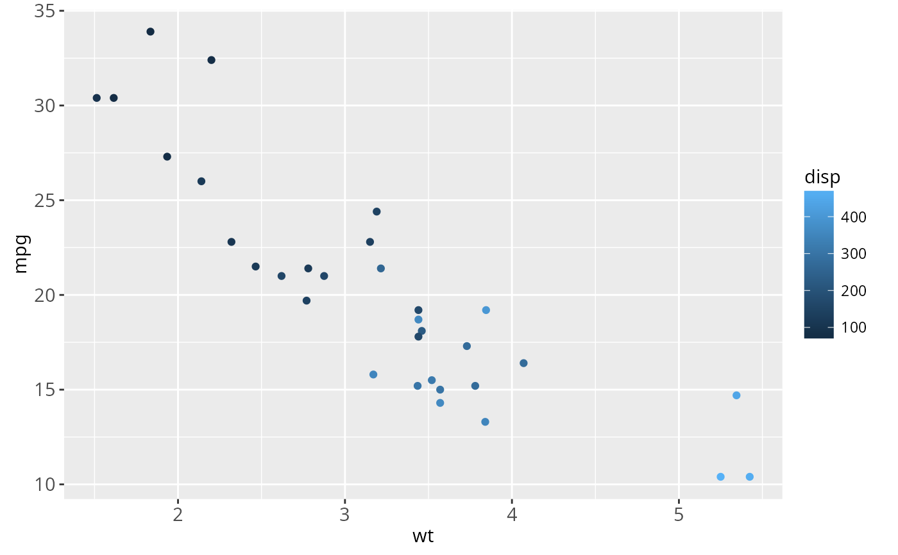
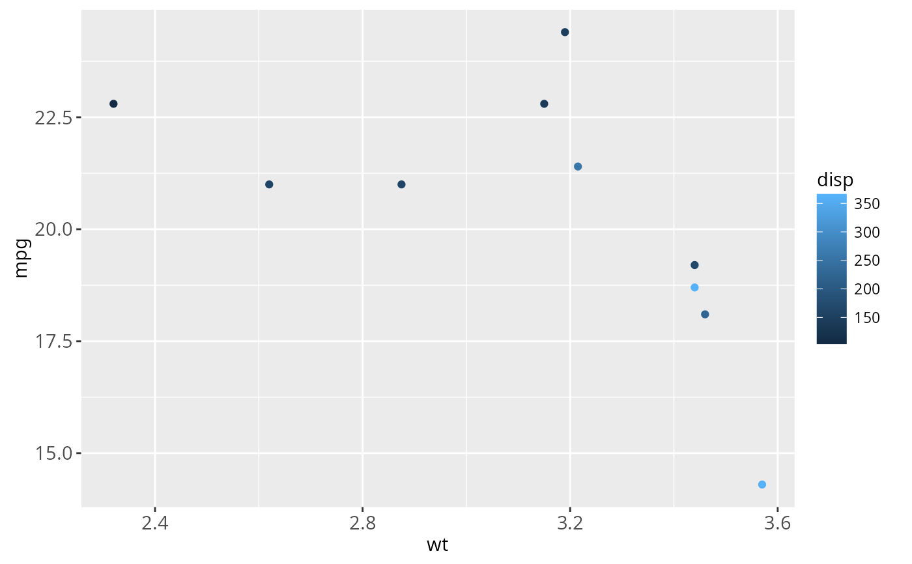

This operator allows you to add objects to a ggplot or theme object.
Details
If the first object is an object of class ggplot, you can add
the following types of objects, and it will return a modified ggplot
object.
data.frame: replace current data.frame (must use%+%)uneval: replace current aestheticslayer: add new layertheme: update plot themescale: replace current scalecoord: override current coordinate systemfacet: override current coordinate faceting
If the first object is an object of class theme, you can add
another theme object. This will return a modified theme object.
For theme objects, the + operator and the %+replace%
can be used to modify elements in themes.
The + operator updates the elements of e1 that differ from
elements specified (not NULL) in e2.
Thus this operator can be used to incrementally add or modify attributes
of a ggplot theme.
In contrast, the %+replace% operator replaces the
entire element; any element of a theme not specified in e2 will not be
present in the resulting theme (i.e. NULL).
Thus this operator can be used to overwrite an entire theme.
Examples
### Adding objects to a ggplot object
p <- ggplot(mtcars, aes(wt, mpg, colour = disp)) +
geom_point()
p

p + coord_cartesian(ylim = c(0, 40))

p + scale_colour_continuous(breaks = c(100, 300))

p + guides(colour = "colourbar")

# Use a different data frame
m <- mtcars[1:10, ]
p %+% m

### Adding objects to a theme object
# Compare these results of adding theme objects to other theme objects
add_el <- theme_grey() + theme(text = element_text(family = "Times"))
rep_el <- theme_grey() %+replace% theme(text = element_text(family = "Times"))
add_el$text
#> List of 10
#> $ family : chr "Times"
#> $ face : chr "plain"
#> $ colour : chr "black"
#> $ size : num 11
#> $ hjust : num 0.5
#> $ vjust : num 0.5
#> $ angle : num 0
#> $ lineheight: num 0.9
#> $ margin : 'margin' num [1:4] 0points 0points 0points 0points
#> ..- attr(*, "unit")= int 8
#> $ debug : logi FALSE
#> - attr(*, "class")= chr [1:2] "element_text" "element"
rep_el$text
#> List of 10
#> $ family : chr "Times"
#> $ face : NULL
#> $ colour : NULL
#> $ size : NULL
#> $ hjust : NULL
#> $ vjust : NULL
#> $ angle : NULL
#> $ lineheight: NULL
#> $ margin : NULL
#> $ debug : NULL
#> - attr(*, "class")= chr [1:2] "element_text" "element"